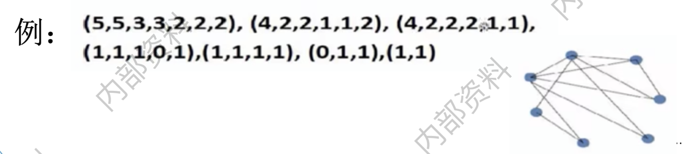

10.1.1 度序列可简单图化
可简单图化的充要条件：
例题：

解法：每次度序列按非递增顺序排列，删除度最大的节点，更新其他节点的度，重新排列，继续重复上述过程。
应用：Frogs' Neighborhood
Description
未名湖附近共\(N\)个大小湖泊\(L_1, L_2, \cdots, L_n\)(其中包括未名湖)，每个湖泊\(L_i\)里住着一只青蛙\(F_i(1 \le i \le N)\)。如果湖泊\(L_i\)和\(L_j\)之间有水路相连，则青蛙\(F_i\)和\(F_j\)互称为邻居。现在已知每只青蛙的邻居数目\(x_1, x_2, \cdots, x_n\)，请你给出每两个湖泊之间的相连关系。
Input
第一行是测试数据的组数\(T(0 \le T \le 20)\)。每组数据包括两行，第一行是整数\(N(2 < N < 10)\)，第二行是\(N\)个整数，\(x_1, x_2,\cdots, x_n(0 \le x_i \le N)\)。
Output
对输入的每组测试数据，如果不存在可能的相连关系，输出"NO"。否则输出"YES"，并用\(N\times N\)的矩阵表示湖泊间的相邻关系，即如果湖泊\(i\)与湖泊\(j\)之间有水路相连，则第\(i\)行的第\(j\)个数字为\(1\)，否则为\(0\)。每两个数字之间输出一个空格。如果存在多种可能，只需给出一种符合条件的情形。相邻两组测试数据之间输出一个空行。
Source
参考代码

1 |
|